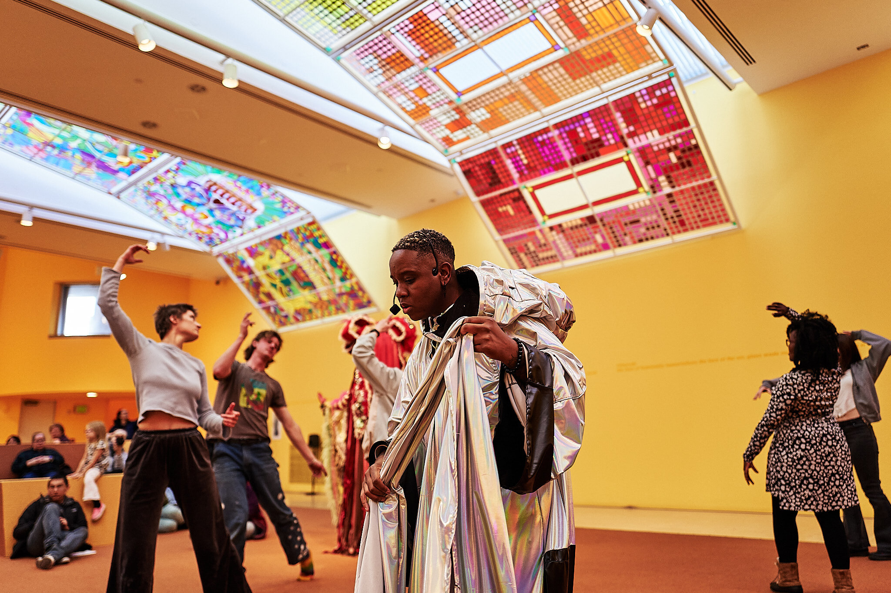

OPEN X X X
Back
Combining vocal incantations, digital sound, and field recordings, the multichannel sound installation functioned as an atmospheric ground for a social engagement experiment. Holding in relation Raul de Nieves’s evocation of material, metaphysical, spiritual, and ancestral realms, the work operated as both an embodied experiment and immersive installation, inviting audiences into practices of deep listening, reflection, and observation.
At its core, the work centered on the transmission of movement, an embodied gesture or phrase initiated within the performance and shared outward among participants. This movement circulated from person to person, it became a living archive, shifting through repetition, interpretation, and relation.
(2023-2024)